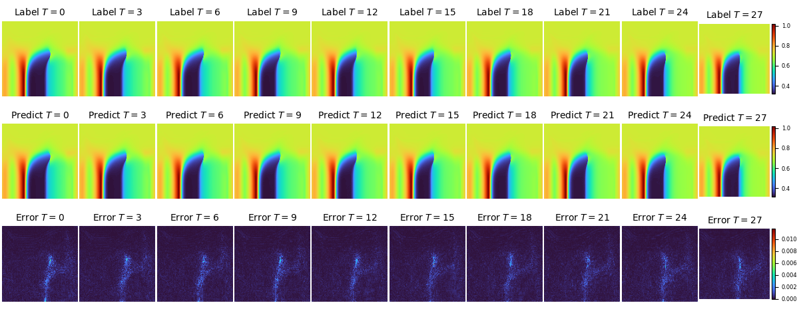
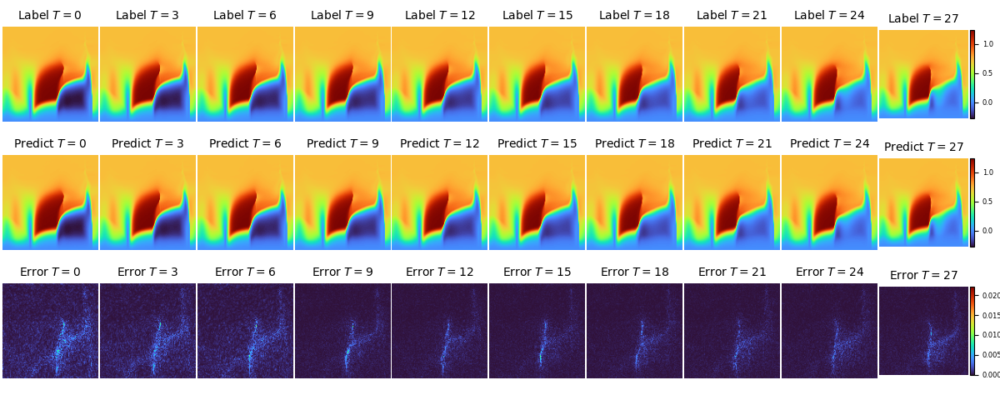
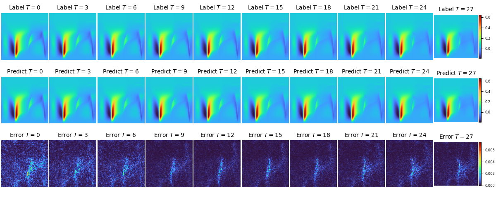

数据驱动(FNO2D和UNET2D两种backbone)下跨声速翼型复杂流场的多时间步预测


概述
高精度非定常流动模拟是计算流体力学中的关键课题，有着广泛的应用场景和广阔的市场价值。然而，传统方法存在着算不快、算不准、算不稳等问题，通过AI方法探索流场演化规律为此提供了新的视角。
本案例在二维跨声速翼型场景下提供了端到端的非定常复杂流场预测解决方案。案例中搭建了傅里叶神经算子(Fourier Neural Operator，FNO)和Unet两种网络结构。可以在保证一定精度的前提下，根据输入的k个时间步的流场，稳定预测出接续的m个时间步的流场。
本案例中，流场来流马赫数达到了Ma=0.73。通过本案例可以验证深度学习方法在存在激波等复杂流动结构场景中，对多物理参数变化下非定常流场预测的有效性。

问题描述
本案例利用k个时刻的流场学习接续的m个时刻的流场，实现二维可压缩非定常流场的预测：
技术路径
求解该问题的具体流程如下：
构建数据集。
构建模型。
优化器与损失函数。
模型训练。
准备环节
实践前，确保已经正确安装合适版本的MindSpore。如果没有，可以通过：
MindSpore安装页面 安装MindSpore。
二维翼型非定常流场预测的实现
二维翼型非定常流场预测的实现分为以下7个步骤：
配置网络与训练参数
数据集的准备
模型构建
损失函数与优化器
训练函数
模型训练
结果可视化
[1]:
import os
import time
import numpy as np
from mindspore import nn, Tensor, context, ops, jit, set_seed, data_sink, save_checkpoint
from mindspore import dtype as mstype
from mindflow.common import get_warmup_cosine_annealing_lr
from mindflow.loss import RelativeRMSELoss
from mindflow.utils import load_yaml_config, print_log
from src import Trainer, init_dataset, init_model, plt_log, check_file_path, count_params
[2]:
set_seed(0)
np.random.seed(0)
[3]:
context.set_context(mode=context.GRAPH_MODE,
save_graphs=False,
device_target="Ascend",
device_id=0)
use_ascend = context.get_context("device_target") == "Ascend"
配置网络与训练参数
从配置文件中读取四类参数，分别为模型相关参数（model）、数据相关参数（data）、优化器相关参数（optimizer)和回调相关参数(callback)。
[4]:
config = load_yaml_config("./config/2D_unsteady.yaml")
data_params = config["data"]
model_params = config["model"]
optimizer_params = config["optimizer"]
summary_params = config["summary"]
数据集的准备
数据集下载地址：data_driven/airfoil/2D_unsteady
数据为npz类型文件，其维度(t, H, W, C)为(9997, 128, 128, 3)。其中，t为时间步数，H和W为流场分辨率，C为通道数，3个通道分别为速度U、V和压力P。
[5]:
train_dataset, test_dataset, means, stds = init_dataset(data_params)
input size (3560, 8, 128, 128, 3)
label size (3560, 32, 128, 128, 3)
train_batch_size : 8
train dataset size: 2967
test dataset size: 593
train batch dataset size: 370
test batch dataset size: 74
模型构建
通过initial_model()函数调用，调用之前，需要先针对硬件定制loss_scaler和compute_dtype。
[6]:
if use_ascend:
from mindspore.amp import DynamicLossScaler, all_finite, auto_mixed_precision
loss_scaler = DynamicLossScaler(1024, 2, 100)
compute_dtype = mstype.float16
model = init_model("fno2d", data_params, model_params, compute_dtype=compute_dtype)
auto_mixed_precision(model, optimizer_params["amp_level"]["fno2d"])
else:
context.set_context(enable_graph_kernel=True)
loss_scaler = None
compute_dtype = mstype.float32
model = init_model("fno2d", data_params, model_params, compute_dtype=compute_dtype)
compute_dtype_of_FNO Float16
损失函数与优化器
当前案例中的损失函数采用了RelativeRMSELoss，优化器则选择了AdamWeightDecay，其中，学习率衰减采用了warmup_cosine_annealing_lr的策略。用户也可以根据需要定制适合的损失函数与优化器。
[7]:
loss_fn = RelativeRMSELoss()
summary_dir = os.path.join(summary_params["summary_dir"], "Exp01", "fno2d")
ckpt_dir = os.path.join(summary_dir, "ckpt_dir")
check_file_path(ckpt_dir)
check_file_path(os.path.join(ckpt_dir, 'img'))
print_log('model parameter count:', count_params(model.trainable_params()))
print_log(
f'learing rate: {optimizer_params["lr"]["fno2d"]}, T_in: {data_params["T_in"]}, T_out: {data_params["T_out"]}')
steps_per_epoch = train_dataset.get_dataset_size()
lr = get_warmup_cosine_annealing_lr(optimizer_params["lr"]["fno2d"], steps_per_epoch,
optimizer_params["epochs"], optimizer_params["warm_up_epochs"])
optimizer = nn.AdamWeightDecay(model.trainable_params(),
learning_rate=Tensor(lr),
weight_decay=optimizer_params["weight_decay"])
model parameter count: 9464259
learing rate: 0.001, T_in: 8, T_out: 32
训练函数
使用MindSpore>= 2.0.0的版本，可以使用函数式编程范式训练神经网络，单步训练函数使用jit装饰。数据下沉函数data_sink，传入单步训练函数和训练数据集。
[8]:
trainer = Trainer(model, data_params, loss_fn, means, stds)
def forward_fn(inputs, labels):
loss, _, _, _ = trainer.get_loss(inputs, labels)
if use_ascend:
loss = loss_scaler.scale(loss)
return loss
grad_fn = ops.value_and_grad(forward_fn, None, optimizer.parameters, has_aux=False)
@jit
def train_step(inputs, labels):
loss, grads = grad_fn(inputs, labels)
if use_ascend:
loss = loss_scaler.unscale(loss)
if all_finite(grads):
grads = loss_scaler.unscale(grads)
loss_new = ops.depend(loss, optimizer(grads))
return loss_new
def test_step(inputs, labels):
return trainer.get_loss(inputs, labels)
train_size = train_dataset.get_dataset_size()
test_size = test_dataset.get_dataset_size()
train_sink = data_sink(train_step, train_dataset, sink_size=1)
test_sink = data_sink(test_step, test_dataset, sink_size=1)
test_interval = summary_params["test_interval"]
save_ckpt_interval = summary_params["save_ckpt_interval"]
模型训练
模型训练过程中边训练边推理。用户可以直接加载测试数据集，每训练test_interval个epoch后输出一次测试集上的推理精度并保存可视化结果。同时，还可以每隔save_checkpoint_interval保存一次checkpoint文件。
[9]:
for epoch in range(1, optimizer_params["epochs"] + 1):
time_beg = time.time()
train_l2_step = 0.0
model.set_train()
for step in range(1, train_size + 1):
loss = train_sink()
train_l2_step += loss.asnumpy()
train_l2_step = train_l2_step / train_size / data_params["T_out"]
print_log(
f"epoch: {epoch}, step time: {(time.time() - time_beg) / steps_per_epoch:>7f}, loss: {train_l2_step:>7f}")
if epoch % test_interval == 0:
model.set_train(False)
test_l2_by_step = [0.0 for _ in range(data_params["T_out"])]
print_log("---------------------------start test-------------------------")
for step in range(test_size):
_, pred, truth, step_losses = test_sink()
for i in range(data_params["T_out"]):
test_l2_by_step[i] += step_losses[i].asnumpy()
test_l2_by_step = [error / test_size for error in test_l2_by_step]
test_l2_step = np.mean(test_l2_by_step)
print_log(f' test epoch: {epoch}, loss: {test_l2_step}')
print_log("---------------------------end test---------------------------")
plt_log(predicts=pred.asnumpy(),
labels=truth.asnumpy(),
img_dir=os.path.join(ckpt_dir, 'img'),
epoch=epoch
)
if epoch % save_ckpt_interval == 0:
save_checkpoint(model, ckpt_file_name=os.path.join(ckpt_dir, 'airfoil2D_unsteady.ckpt'))
epoch: 1, step time: 2.652332, loss: 0.733017
epoch: 2, step time: 0.688175, loss: 0.203251
epoch: 3, step time: 0.686817, loss: 0.128816
epoch: 4, step time: 0.685909, loss: 0.109786
epoch: 5, step time: 0.688545, loss: 0.093725
epoch: 6, step time: 0.685986, loss: 0.076027
epoch: 7, step time: 0.686459, loss: 0.069847
epoch: 8, step time: 0.688228, loss: 0.058694
epoch: 9, step time: 0.688053, loss: 0.060886
epoch: 10, step time: 0.692221, loss: 0.065305
---------------------------start test-------------------------
test epoch: 10, loss: 0.03798117920381923
---------------------------end test---------------------------
epoch: 11, step time: 0.691715, loss: 0.059103
epoch: 12, step time: 0.689456, loss: 0.059963
epoch: 13, step time: 0.688435, loss: 0.056177
epoch: 14, step time: 0.688293, loss: 0.044799
epoch: 15, step time: 0.688754, loss: 0.048757
epoch: 16, step time: 0.687413, loss: 0.051108
epoch: 17, step time: 0.689244, loss: 0.041168
epoch: 18, step time: 0.687268, loss: 0.044156
epoch: 19, step time: 0.686074, loss: 0.044050
epoch: 20, step time: 0.687592, loss: 0.041634
---------------------------start test-------------------------
test epoch: 20, loss: 0.03290090155693375
---------------------------end test---------------------------
epoch: 21, step time: 0.686854, loss: 0.038138
epoch: 22, step time: 0.688540, loss: 0.040290
epoch: 23, step time: 0.687311, loss: 0.037129
epoch: 24, step time: 0.685613, loss: 0.042077
epoch: 25, step time: 0.688631, loss: 0.035659
epoch: 26, step time: 0.687999, loss: 0.031553
epoch: 27, step time: 0.689534, loss: 0.036624
epoch: 28, step time: 0.687576, loss: 0.040991
epoch: 29, step time: 0.685203, loss: 0.034616
epoch: 30, step time: 0.687388, loss: 0.029517
---------------------------start test-------------------------
test epoch: 30, loss: 0.024450113343207062
---------------------------end test---------------------------
epoch: 31, step time: 0.687894, loss: 0.030733
epoch: 32, step time: 0.686834, loss: 0.033166
epoch: 33, step time: 0.684156, loss: 0.034593
epoch: 34, step time: 0.687594, loss: 0.030224
epoch: 35, step time: 0.685184, loss: 0.028527
epoch: 36, step time: 0.687365, loss: 0.030338
epoch: 37, step time: 0.686692, loss: 0.032679
epoch: 38, step time: 0.684623, loss: 0.030559
epoch: 39, step time: 0.684311, loss: 0.028198
epoch: 40, step time: 0.686643, loss: 0.030848
---------------------------start test-------------------------
test epoch: 40, loss: 0.024750267230194516
---------------------------end test---------------------------
epoch: 41, step time: 0.696444, loss: 0.027831
epoch: 42, step time: 0.696912, loss: 0.029151
epoch: 43, step time: 0.697324, loss: 0.032190
epoch: 44, step time: 0.695226, loss: 0.026790
epoch: 45, step time: 0.696124, loss: 0.026855
epoch: 46, step time: 0.695851, loss: 0.026540
epoch: 47, step time: 0.695193, loss: 0.027463
epoch: 48, step time: 0.694509, loss: 0.032763
epoch: 49, step time: 0.696785, loss: 0.027059
epoch: 50, step time: 0.696424, loss: 0.024739
---------------------------start test-------------------------
test epoch: 50, loss: 0.02536101617246262
---------------------------end test---------------------------
epoch: 51, step time: 0.691392, loss: 0.025051
epoch: 52, step time: 0.691471, loss: 0.021609
epoch: 53, step time: 0.686759, loss: 0.022961
epoch: 54, step time: 0.684971, loss: 0.025058
epoch: 55, step time: 0.687838, loss: 0.024519
epoch: 56, step time: 0.688630, loss: 0.025127
epoch: 57, step time: 0.684747, loss: 0.023062
epoch: 58, step time: 0.685800, loss: 0.024089
epoch: 59, step time: 0.687165, loss: 0.023332
epoch: 60, step time: 0.687198, loss: 0.022027
---------------------------start test-------------------------
test epoch: 60, loss: 0.012668337510911294
---------------------------end test---------------------------
epoch: 61, step time: 0.697993, loss: 0.023954
epoch: 62, step time: 0.694950, loss: 0.022935
epoch: 63, step time: 0.695095, loss: 0.019998
epoch: 64, step time: 0.693050, loss: 0.021672
epoch: 65, step time: 0.694423, loss: 0.020992
epoch: 66, step time: 0.694051, loss: 0.024120
epoch: 67, step time: 0.693227, loss: 0.021222
epoch: 68, step time: 0.695719, loss: 0.018898
epoch: 69, step time: 0.695193, loss: 0.020580
epoch: 70, step time: 0.695925, loss: 0.021619
---------------------------start test-------------------------
test epoch: 70, loss: 0.018595953204518033
---------------------------end test---------------------------
epoch: 71, step time: 0.699969, loss: 0.018871
epoch: 72, step time: 0.693832, loss: 0.018930
epoch: 73, step time: 0.696967, loss: 0.020276
epoch: 74, step time: 0.698306, loss: 0.021508
epoch: 75, step time: 0.696895, loss: 0.017177
epoch: 76, step time: 0.698356, loss: 0.021475
epoch: 77, step time: 0.694738, loss: 0.018566
epoch: 78, step time: 0.691645, loss: 0.018249
epoch: 79, step time: 0.693678, loss: 0.019016
epoch: 80, step time: 0.693986, loss: 0.021684
---------------------------start test-------------------------
test epoch: 80, loss: 0.03425668393233414
---------------------------end test---------------------------
epoch: 81, step time: 0.694019, loss: 0.018643
epoch: 82, step time: 0.693350, loss: 0.019609
epoch: 83, step time: 0.696632, loss: 0.017143
epoch: 84, step time: 0.694124, loss: 0.016935
epoch: 85, step time: 0.693287, loss: 0.017587
epoch: 86, step time: 0.696237, loss: 0.016808
epoch: 87, step time: 0.692938, loss: 0.016272
epoch: 88, step time: 0.693298, loss: 0.016350
epoch: 89, step time: 0.693079, loss: 0.016122
epoch: 90, step time: 0.695640, loss: 0.016793
---------------------------start test-------------------------
test epoch: 90, loss: 0.015049820608141631
---------------------------end test---------------------------
epoch: 91, step time: 0.695330, loss: 0.016076
epoch: 92, step time: 0.694938, loss: 0.016224
epoch: 93, step time: 0.696670, loss: 0.019537
epoch: 94, step time: 0.694749, loss: 0.014278
epoch: 95, step time: 0.696291, loss: 0.015967
epoch: 96, step time: 0.695401, loss: 0.014452
epoch: 97, step time: 0.692933, loss: 0.013790
epoch: 98, step time: 0.693399, loss: 0.014776
epoch: 99, step time: 0.691681, loss: 0.012814
epoch: 100, step time: 0.694035, loss: 0.014525
---------------------------start test-------------------------
test epoch: 100, loss: 0.014199618234596456
---------------------------end test---------------------------
epoch: 101, step time: 0.693424, loss: 0.015365
epoch: 102, step time: 0.692964, loss: 0.013885
epoch: 103, step time: 0.693850, loss: 0.015042
epoch: 104, step time: 0.691925, loss: 0.013348
epoch: 105, step time: 0.693731, loss: 0.012397
epoch: 106, step time: 0.694072, loss: 0.015533
epoch: 107, step time: 0.693095, loss: 0.013169
epoch: 108, step time: 0.694365, loss: 0.013428
epoch: 109, step time: 0.694493, loss: 0.012834
epoch: 110, step time: 0.695011, loss: 0.011853
---------------------------start test-------------------------
test epoch: 110, loss: 0.010528819402286506
---------------------------end test---------------------------
epoch: 111, step time: 0.699863, loss: 0.015232
epoch: 112, step time: 0.695245, loss: 0.012432
epoch: 113, step time: 0.696781, loss: 0.012335
epoch: 114, step time: 0.696696, loss: 0.012129
epoch: 115, step time: 0.696233, loss: 0.011410
epoch: 116, step time: 0.691236, loss: 0.013234
epoch: 117, step time: 0.694421, loss: 0.012024
epoch: 118, step time: 0.694588, loss: 0.011595
epoch: 119, step time: 0.695370, loss: 0.011778
epoch: 120, step time: 0.695880, loss: 0.011173
---------------------------start test-------------------------
test epoch: 120, loss: 0.009641800081275555
---------------------------end test---------------------------
epoch: 121, step time: 0.695209, loss: 0.011097
epoch: 122, step time: 0.691141, loss: 0.010855
epoch: 123, step time: 0.695012, loss: 0.011044
epoch: 124, step time: 0.695229, loss: 0.011432
epoch: 125, step time: 0.694662, loss: 0.010873
epoch: 126, step time: 0.692417, loss: 0.010477
epoch: 127, step time: 0.691926, loss: 0.010197
epoch: 128, step time: 0.693930, loss: 0.011748
epoch: 129, step time: 0.696376, loss: 0.009750
epoch: 130, step time: 0.694301, loss: 0.009874
---------------------------start test-------------------------
test epoch: 130, loss: 0.007853382740585084
---------------------------end test---------------------------
epoch: 131, step time: 0.696573, loss: 0.010120
epoch: 132, step time: 0.693105, loss: 0.010578
epoch: 133, step time: 0.696203, loss: 0.010406
epoch: 134, step time: 0.692455, loss: 0.010169
epoch: 135, step time: 0.695954, loss: 0.009985
epoch: 136, step time: 0.691915, loss: 0.009575
epoch: 137, step time: 0.691145, loss: 0.009403
epoch: 138, step time: 0.693045, loss: 0.009086
epoch: 139, step time: 0.695551, loss: 0.009042
epoch: 140, step time: 0.694040, loss: 0.009282
---------------------------start test-------------------------
test epoch: 140, loss: 0.009246890225472884
---------------------------end test---------------------------
epoch: 141, step time: 0.688479, loss: 0.008823
epoch: 142, step time: 0.689157, loss: 0.009289
epoch: 143, step time: 0.685248, loss: 0.009576
epoch: 144, step time: 0.687585, loss: 0.009185
epoch: 145, step time: 0.685840, loss: 0.009380
epoch: 146, step time: 0.689897, loss: 0.008490
epoch: 147, step time: 0.690710, loss: 0.008606
epoch: 148, step time: 0.688072, loss: 0.008654
epoch: 149, step time: 0.689746, loss: 0.008934
epoch: 150, step time: 0.688304, loss: 0.008629
---------------------------start test-------------------------
test epoch: 150, loss: 0.007401696321156468
---------------------------end test---------------------------
epoch: 151, step time: 0.697744, loss: 0.009447
epoch: 152, step time: 0.699723, loss: 0.008901
epoch: 153, step time: 0.699869, loss: 0.008984
epoch: 154, step time: 0.699634, loss: 0.008882
epoch: 155, step time: 0.697683, loss: 0.009762
epoch: 156, step time: 0.696223, loss: 0.009919
epoch: 157, step time: 0.690939, loss: 0.009107
epoch: 158, step time: 0.691592, loss: 0.008638
epoch: 159, step time: 0.693206, loss: 0.008478
epoch: 160, step time: 0.692778, loss: 0.008224
---------------------------start test-------------------------
test epoch: 160, loss: 0.007048012673810779
---------------------------end test---------------------------
epoch: 161, step time: 0.701309, loss: 0.009469
epoch: 162, step time: 0.697829, loss: 0.008522
epoch: 163, step time: 0.698344, loss: 0.008658
epoch: 164, step time: 0.699316, loss: 0.008556
epoch: 165, step time: 0.696708, loss: 0.008601
epoch: 166, step time: 0.700000, loss: 0.009487
epoch: 167, step time: 0.696938, loss: 0.009309
epoch: 168, step time: 0.696608, loss: 0.009240
epoch: 169, step time: 0.698408, loss: 0.008620
epoch: 170, step time: 0.699614, loss: 0.008341
---------------------------start test-------------------------
test epoch: 170, loss: 0.00696752735077737
---------------------------end test---------------------------
epoch: 171, step time: 0.700533, loss: 0.008454
epoch: 172, step time: 0.701728, loss: 0.008413
epoch: 173, step time: 0.700658, loss: 0.008100
epoch: 174, step time: 0.697647, loss: 0.008213
epoch: 175, step time: 0.700830, loss: 0.007987
epoch: 176, step time: 0.697824, loss: 0.007898
epoch: 177, step time: 0.698811, loss: 0.007717
epoch: 178, step time: 0.698952, loss: 0.007696
epoch: 179, step time: 0.695718, loss: 0.007801
epoch: 180, step time: 0.694938, loss: 0.007583
---------------------------start test-------------------------
test epoch: 180, loss: 0.006799178198569869
---------------------------end test---------------------------
epoch: 181, step time: 0.694381, loss: 0.007583
epoch: 182, step time: 0.693612, loss: 0.007847
epoch: 183, step time: 0.693077, loss: 0.007647
epoch: 184, step time: 0.693908, loss: 0.007516
epoch: 185, step time: 0.694870, loss: 0.007329
epoch: 186, step time: 0.696124, loss: 0.007347
epoch: 187, step time: 0.695269, loss: 0.007284
epoch: 188, step time: 0.695620, loss: 0.007207
epoch: 189, step time: 0.692392, loss: 0.007136
epoch: 190, step time: 0.695566, loss: 0.007082
---------------------------start test-------------------------
test epoch: 190, loss: 0.006618331926457924
---------------------------end test---------------------------
epoch: 191, step time: 0.693253, loss: 0.007012
epoch: 192, step time: 0.691330, loss: 0.007043
epoch: 193, step time: 0.692804, loss: 0.006986
epoch: 194, step time: 0.690053, loss: 0.006973
epoch: 195, step time: 0.692159, loss: 0.006967
epoch: 196, step time: 0.690170, loss: 0.006944
epoch: 197, step time: 0.690344, loss: 0.006930
epoch: 198, step time: 0.690674, loss: 0.006911
epoch: 199, step time: 0.690877, loss: 0.006904
epoch: 200, step time: 0.689170, loss: 0.006892
---------------------------start test-------------------------
test epoch: 200, loss: 0.005457837492891436
---------------------------end test---------------------------
结果可视化
UNET2D backbone下，不同时刻压力P的实际值、预测值和误差在流场中的分布如下图：

UNET2D backbone下，不同时刻速度U的实际值、预测值和误差在流场中的分布如下图：

UNET2D backbone下，不同时刻速度V的实际值、预测值和误差在流场中的分布如下图：

FNO2D backbone下，不同时刻压力P的实际值、预测值和误差在流场中的分布如下图：

FNO2D backbone下，不同时刻速度U的实际值、预测值和误差在流场中的分布如下图：

FNO2D backbone下，不同时刻速度V的实际值、预测值和误差在流场中的分布如下图：
